Core Premise
In 2087, the HERALD Program — humanity's decades-long deep space broadcast — received a response. Eighteen months later, the Vael arrived in low orbit. No diplomacy. No demands. They began systematic planetary suppression: cities glassed, satellites destroyed, communications shattered. Earth's militaries fell within six weeks.
Survivors now live in the cracks — underground warrens, deep forest camps, flooded coastal ruins. The Vael don't exterminate humans outright; they harvest, relocate, and experiment. Extinction isn't the goal. Subjugation is.
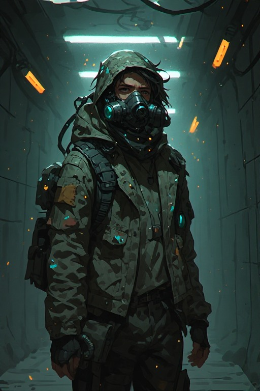
// Player Character
The Remnant
An ordinary survivor with no special origin, no chosen-one prophecy. A former logistics worker, medic, engineer, or farmer who made it through the first wave by luck or instinct. Every decision costs something. Morality is not black and white.
Locations
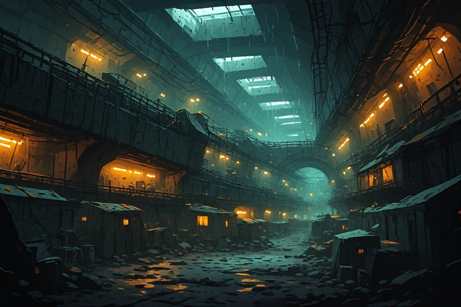
01
The Underloft
A vast network of pre-war metro tunnels converted into a survivor settlement. Roughly 4,000 people. Lit by salvaged LEDs. Cramped, paranoid, alive.
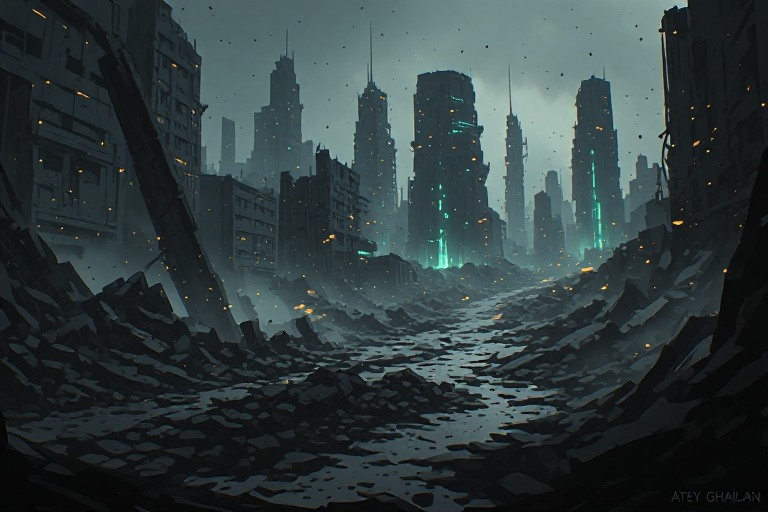
02
The Ashline
Ruins of a glassed city occupied by Vael processing units. A killing ground and salvage zone. Going in is a calculated gamble.
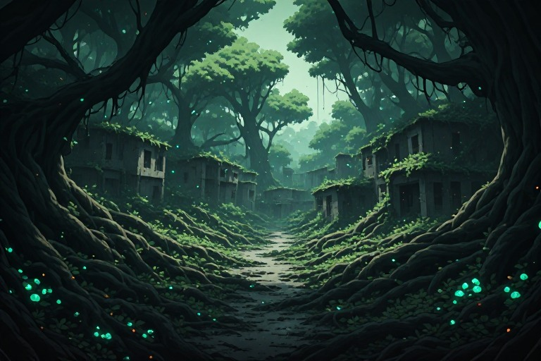
03
The Greenwild
Dense overgrown forest reclaiming suburban ruins. The Vael struggle to patrol it — their sensors are confused by dense biomass.
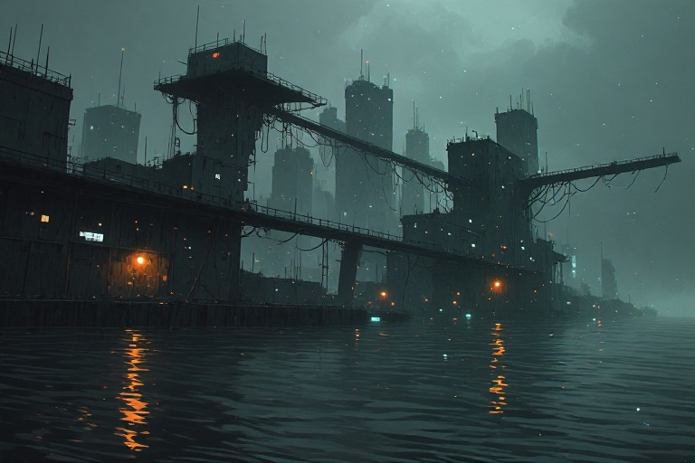
04
Tidemark
Flooded coastal ruins. Survivor platforms built across rooftops. A trade hub — if you can survive the tides and the patrols.
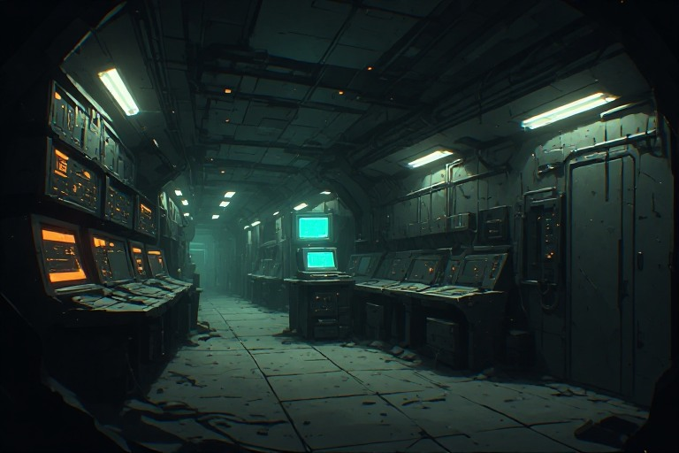
05
The Cradle
A sealed pre-war research bunker. Contains AI systems, biological archives, and partial HERALD schematics. Multiple factions racing to control it.
Human Factions
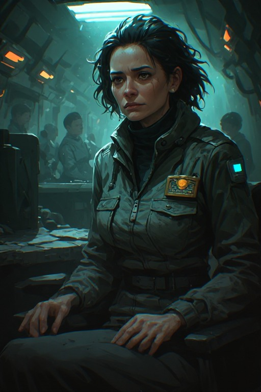
The Remnant Council
Governing body of the Underloft. Bureaucratic, cautious, increasingly authoritarian. Has a fragile peace with certain Vael patrols — the nature of which is disputed.
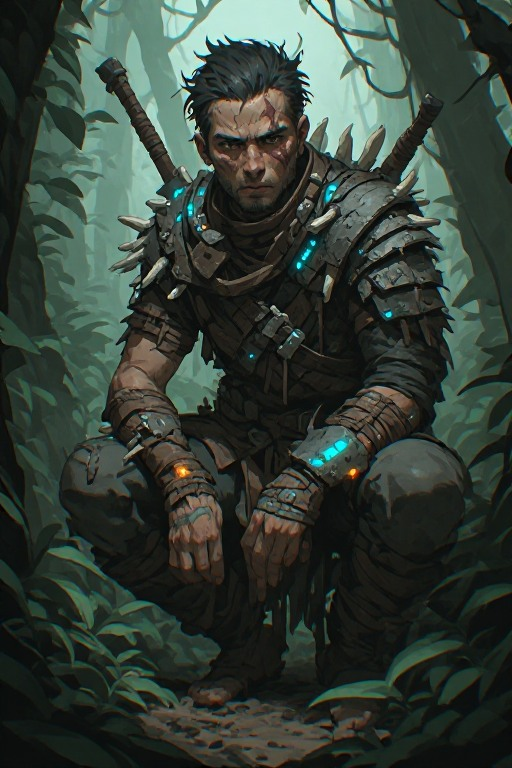
The Ferals
Decentralized clans in the Greenwild. No central leadership. Deeply suspicious of organized groups. Unpredictable allies, fierce fighters.
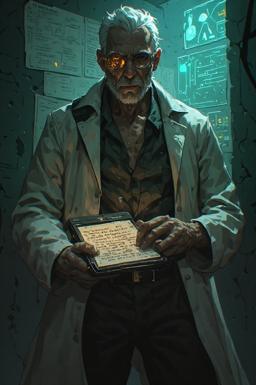
The Signal Corps
Former scientists and HERALD survivors. Believe the answer lies in understanding Vael technology. Seen as dangerous idealists — or the last hope.
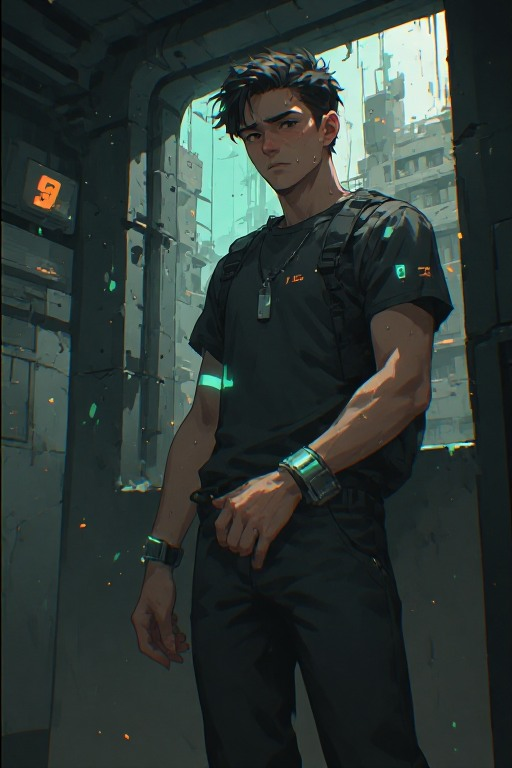
The Accord
Collaborationists who accepted Vael rule for protected zones. Many genuinely believe cooperation is the only path to survival. Hated by most.
Vael Hierarchy
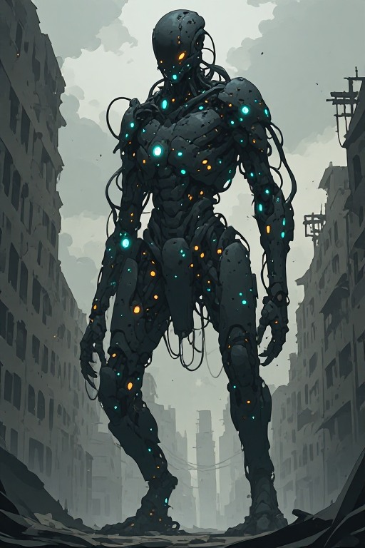
Harvesters
Ground-level bio-mechanical units grown for a specific function. Patrol, capture, process. Some older units have begun exhibiting anomalous, unpredictable behaviour.
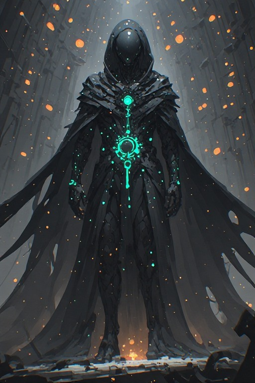
Overseers
Commanding class. Rarely seen on the ground. Communicate via harmonic resonance — not language. Their goals on Earth extend beyond territory.
Quest Types
// Type 01
Scavenge & Recover
Enter a contested zone to retrieve supplies, technology, or people. High risk, essential payoff. Time pressure or enemy presence raises the stakes.
// Type 02
Faction Tensions
Navigate the fractured politics between survivor groups. Mediate, negotiate, manipulate, or fight. No faction is purely good.
// Type 03
Vael Disruption
Sabotage Harvester patrols, disrupt Vael operations, or free captive survivors. Requires stealth or force. Success draws increased Vael attention.
// Type 04
Lore & Discovery
Investigate the deeper mysteries. What do the Vael actually want? Why did HERALD's signal bring them here? Piece together fragments through exploration.
Tone
Grim, grounded, and suffocating. There is no military to call. No cavalry. No guarantee that doing the right thing keeps you alive. The world is visually dark — emergency lighting, filtered grey skies, bioluminescent Vael structures cutting through the dark like wounds. Music is sparse: distant industrial hum, silence, the sound of breathing. Hope exists — but it costs something every time.
Difficulty
Surviving
Resources scarce but manageable. Enemy patrols predictable. Consequences of bad decisions are survivable. The world is brutal but learnable.
Enduring
Resources tight. Enemies adapt. Every mission carries real risk. Faction decisions have lasting consequences. Death is common. Recovery is slow.
Remnant
Permadeath for companions. Resources near-zero. Vael actively hunt player patterns. One wrong decision can unravel everything built over hours of play.